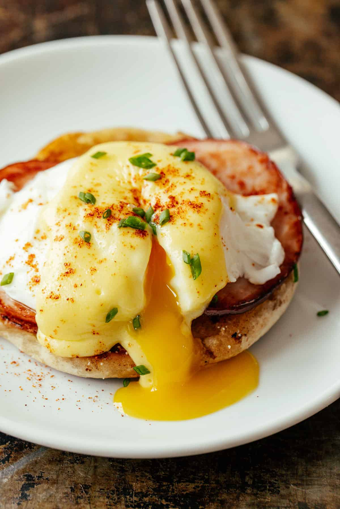

Eggs Benedict

For a Breakfast as Good as Sex
What is an Eggs Bennedict?
Eggs Benedict is a traditional American breakfast and brunch recipe that originated
in New York City. It consists of an English muffin, cut in half, toasted, and topped
with Canadian bacon, poached eggs, and classic French hollandaise sauce. It's decadent,
rich, and satisfying.People assume eggs benedict are of French origin because they use
Hollandaise Sauce (a popular French sauce), but it actually originated in New York, USA
at the Waldorf hotel when a customer requested the combination as a custom order, and the
restaurant was so impressed by it, they added it to their menu.
Ingredients
For Hollandaise Sauce
- 2 Large Eggs Yolks
- 2 Tbsp Lukewarm Water
- 2 Tsp Lemon Juice
- 1/2 Tsp Dijon Mustard
- 1/2 Cup of Unsalted Butter
- 1/4 Tsp Sea Salt
- 1/8 Tsp Cayenne Pepper
For Eggs Benedict
- Hollandaise Sauce
- 2 English Muffins Halved
- 4 Tsp Unsalted Butter, For Toasting Muffins
- 4 Slices of Canadian Bacon
- 4 Large Eggs
- 1 Tbsp White Vinegar, For Poaching Eggs
- Cayenne Pepper, To Garnish
- Chives, To Garnish
Instructions
For Hollandaise Sauce
- Separate the egg yolks from the egg whites. Store the egg whites in an
airtight container in the fridge for another recipe.
- Add the egg yolks to a small saucepan with water, lemon juice, and dijon,
and whisk until well-combined.
- Cut the butter into small pieces and add them to the egg mixture.
- Place the pot over medium-low heat, whisking the mixture constantly.
As the butter melts, it will get a little frothy. Continue whisking
constantly for about 3 minutes or until the mixture starts to thicken then
immediately remove from heat. It should be thick enough to coat the back of
a spoon.
- Season with salt and cayenne pepper, adding more seasoning to taste. Serve
right away or cover to keep warm. If the sauce gets too thick, whisk in a
teaspoon of warm water to loosen it up.
For Eggs Benedict
- Prep for Poached Eggs: Place a pot of water with 1 Tbsp vinegar on the stove
for making poached eggs and bring it just to a simmer.
- Sauté meat: In a large skillet, sauté your meat until hot and golden then
transfer to a plate and cover to keep warm.
- Toast English muffins: Melt 2 tsp butter on the same skillet and add English
muffins cut-side down and toast until golden brown. Remove the skillet from the heat,
leaving the muffins in the skillet to keep warm.
- Poach Eggs: Once water is barely simmering, poach 4 eggs.
- Assemble: Place English muffin halves on serving plates cut-side up. Top with your
Canadian Bacon. Place the egg over the meat. Pour the hollandaise sauce over the eggs,
dividing the hollandaise recipe between the 4 eggs. Sprinkle the top with cayenne pepper
and garnish with chives. Serve immediately.
Click Here To Go Back To The List of Recipes